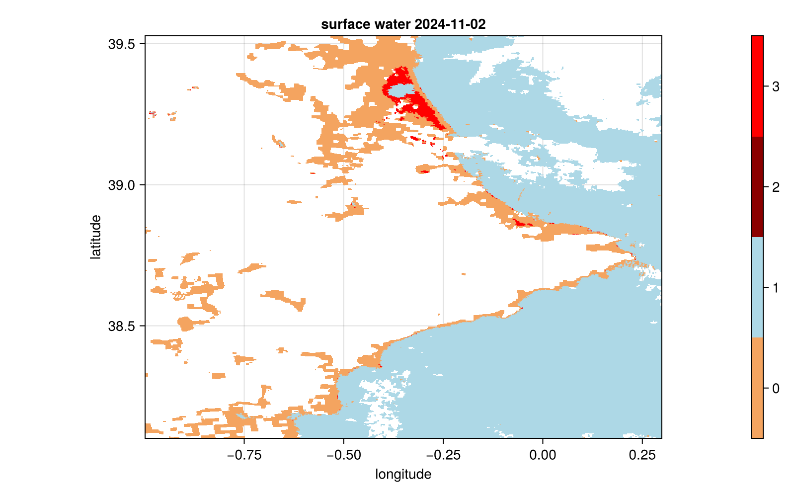

MODIS/Aqua+Terra Global Flood Product
In this example, we will download and visualize the MODIS/Aqua+Terra Global Flood Product for the Valencia region (Spain) on the 2d November, 2024.
The data has been also be downloaded from NASA World View. Unfortunately, only the last 7 days are visible on this sites but the download links below are still available. On the NASA World View page, one can click on "Add Layers", cloose "Flood (3-Day Window)" and confirm with "Add Layer". To download the data for a different day, click on "Data" and download the "MODIS/Aqua+Terra Global Flood Product L3 NRT 250m 3-day GeoTIFF" product, set your area of interest and go to "Download Via EarthData Search".
using Dates
using TIFFDatasets
using CairoMakie
using CommonDataModel: @select
using ColorSchemes
using Statisticsstore images as separated files
CairoMakie.enable_only_mime!("png")The data was originally available at nrt3.modaps.eosdis.nasa.gov:
urls = [
"https://data-assimilation.net/upload/Alex/TIFF/MCDWD_L3_F2_NRT.A2024306.h17v05.061.tif",
"https://data-assimilation.net/upload/Alex/TIFF/MCDWD_L3_F2_NRT.A2024306.h18v05.061.tif",
];Download the data if necessary
fnames = basename.(urls)
if !all(isfile.(fnames))
download.(urls,fnames)
end2-element Vector{String}:
"MCDWD_L3_F2_NRT.A2024306.h17v05.061.tif"
"MCDWD_L3_F2_NRT.A2024306.h18v05.061.tif"Inspect the first geoTIFF file
ds = TIFFDataset(fnames[1],"r")Dataset: MCDWD_L3_F2_NRT.A2024306.h17v05.061.tif
Group: /
Dimensions
cols = 4800
rows = 4800
Variables
lon (4800 × 4800)
Datatype: Float64 (Float64)
Dimensions: cols × rows
Attributes:
standard_name = longitude
units = degrees_east
lat (4800 × 4800)
Datatype: Float64 (Float64)
Dimensions: cols × rows
Attributes:
standard_name = latitude
units = degrees_north
x (4800)
Datatype: Float64 (Float64)
Dimensions: cols
Attributes:
standard_name = projection_x_coordinate
y (4800)
Datatype: Float64 (Float64)
Dimensions: rows
Attributes:
standard_name = projection_y_coordinate
crs
Attributes:
longitude_of_prime_meridian = 0.0
semi_major_axis = 6.3782064e6
inverse_flattening = 294.978698213898
crs_wkt = GEOGCS["Unknown datum based upon the Clarke 1866 ellipsoid",DATUM["Not specified (based on Clarke 1866 spheroid)",SPHEROID["Clarke 1866",6378206.4,294.978698213898,AUTHORITY["EPSG","7008"]]],PRIMEM["Greenwich",0],UNIT["degree",0.0174532925199433,AUTHORITY["EPSG","9122"]],AXIS["Latitude",NORTH],AXIS["Longitude",EAST]]
GeoTransform = -10.0 0.0020833333333333333 0.0 40.0 0.0 -0.0020833333333333333
band1 (4800 × 4800)
Datatype: Union{Missing, UInt8} (UInt8)
Dimensions: cols × rows
Attributes:
grid_mapping = crs
_FillValue = 255.0
long_name = NRT Combined Terra and Aqua MODIS Flood_2Day_250m
valid_range = UInt8[0x00, 0x03]
Global attributes
Conventions = CF-1.8
ALGORITHMPACKAGEACCEPTANCEDATE = 2019-10-09
ALGORITHMPACKAGEMATURITYCODE = verified
ALGORITHMPACKAGENAME = MCDFLOOD
ALGORITHMPACKAGEVERSION = 6.1.0
ASSOCIATEDINSTRUMENTSHORTNAME.1 = MODIS
ASSOCIATEDPLATFORMSHORTNAME.1 = AMPM
ASSOCIATEDSENSORSHORTNAME.1 = MODIS
AUTOMATICQUALITYFLAG.1 = Passed
AUTOMATICQUALITYFLAGEXPLANATION.1 = Always Passed.
DAYNIGHTFLAG = Day
description = 2 day flood pixels detected from Terra and Aqua
no clouds removed
terrain shadow pixels masked
HAND pixels masked
threshold from table, minimum of 2
Flag values:
255 : Insufficient data
0 : No water
1 : Water (matches standard reference water)
2 : Recurring flood (expected seasonal flood)
3 : Flood (unusual)
DESCRREVISION = 6.1.4
EASTBOUNDINGCOORDINATE = 0.000000
EQUATORCROSSINGDATE.1 = 0
EQUATORCROSSINGLONGITUDE.1 = 0
EQUATORCROSSINGTIME.1 = 0
EXCLUSIONGRINGFLAG = N
GRINGPOINTLATITUDE = 40, 40, 30, 30
GRINGPOINTLONGITUDE = -10, 0, 0, -10
GRINGPOINTSEQUENCENO = 1, 2, 3, 4
HDFEOSVersion = HDFEOS_V2.20
HORIZONTALTILENUMBER = 17
identifier_product_doi = 10.5067/MODIS/MCDWD_L3_NRT.061
identifier_product_doi_authority = http://dx.doi.org
INPUTPOINTER = MCDWD_IHMA.A2023001.h17v05.001.img,MCDWD_IRWMA.A2023001.h17v05.001.img,MCDWD_L3_NRT.A2024305.h17v05.061.2024306060718.hdf,MODWDLGA_NRT.A2024306.0905.h17v05.061.2024306103428.hdf,MODWDLGA_NRT.A2024306.1040.h17v05.061.2024306115011.hdf,MODWDLGA_NRT.A2024306.1045.h17v05.061.2024306114951.hdf,MODWD_ITSM.A2010022.h17v05.001.img,MYDWDLGA_NRT.A2024306.1415.h17v05.061.2024306152549.hdf,MYDWDLGA_NRT.A2024306.1420.h17v05.061.2024306152510.hdf,MYDWD_ITSM.A2010022.h17v05.001.img
INSTRUMENTNAME = Moderate-Resolution Imaging SpectroRadiometer
LOCALGRANULEID = MCDWD_L3_NRT.A2024306.h17v05.061.2024307013418.hdf
LOCALVERSIONID = 6.1.4
LONGNAME = MODIS/Aqua+Terra Flood Map Daily L3 Global 250m LLL Grid NRT
NORTHBOUNDINGCOORDINATE = 40.000000
ORBITNUMBER.1 = 0
PGEVERSION = 6.1.4
PROCESSINGCENTER = MODAPS
PROCESSINGENVIRONMENT = Linux minion20312 5.4.0-1099-fips #109-Ubuntu SMP Tue Apr 30 14:07:22 UTC 2024 x86_64 x86_64 x86_64 GNU/Linux
PRODUCTIONDATETIME = 2024-11-02T01:34:18
PRODUCTIONHISTORY = PGE159N:6.1.4;
QAPERCENTCLOUDCOVER = 0
QAPERCENTCLOUDSHADOW = 0
QAPERCENTMISSINGDATA = 0
QAPERCENTOUTOFBOUNDSDATA = 0
RANGEBEGINNINGDATE = 2024-11-01
RANGEBEGINNINGTIME = 00:00:00
RANGEENDINGDATE = 2024-11-02
RANGEENDINGTIME = 00:00:00
REPROCESSINGACTUAL = Near Real Time
REPROCESSINGPLANNED = further update is anticipated
SCIENCEQUALITYFLAG.1 = Not Investigated
SCIENCEQUALITYFLAGEXPLANATION.1 = 0
SHORTNAME = MCDWD_L3_NRT
SOUTHBOUNDINGCOORDINATE = 30.000000
TileID = 61017005
units = none
VERSIONID = 61
VERTICALTILENUMBER = 05
WESTBOUNDINGCOORDINATE = -10.000000
AREA_OR_POINT = Area
The size of the data array band1:
size(ds["band1"])(4800, 4800)Concatenate two geoTIFF files along the cols dimension (columns)
ds = TIFFDataset(fnames,aggdim = "cols");The band1 array is now twice as large:
size(ds["band1"])(9600, 4800)Make a virtual subset based on coordinate values using longitude (x) and latitude (y)
ds2 = @select(ds,-1 <= x <= 0.3 && 38.1 <= y <= 39.53);Load all the data
band1 = ds2["band1"][:,:];
lon = ds2["lon"][:,:];
lat = ds2["lat"][:,:];Extract the attribute "production date time" for the metadata
datetime = DateTime(ds.attrib["PRODUCTIONDATETIME"])2024-11-02T01:34:18Make a plot
title = "surface water " * Dates.format(datetime,"yyyy-mm-dd")
fig = Figure(size=(800,500));
ga = Axis(fig[1, 1]; title = title,
xlabel = "longitude",
ylabel = "latitude",
aspect = AxisAspect(1/cosd(mean(lat))))
xlims!(ga,extrema(lon))
ylims!(ga,extrema(lat))
s = surface!(ga,lon,lat,band1,
shading = NoShading,
colormap = cgrad(ColorScheme([colorant"sandybrown",
colorant"lightblue",
colorant"darkred",
colorant"red"]),
4, categorical = true),
colorrange = (-0.5, 3.5))
Colorbar(fig[1,2],s,ticks = 0:3)
fig
Load the "description" attribute
println(ds.attrib["description"])2 day flood pixels detected from Terra and Aqua
no clouds removed
terrain shadow pixels masked
HAND pixels masked
threshold from table, minimum of 2
Flag values:
255 : Insufficient data
0 : No water
1 : Water (matches standard reference water)
2 : Recurring flood (expected seasonal flood)
3 : Flood (unusual)